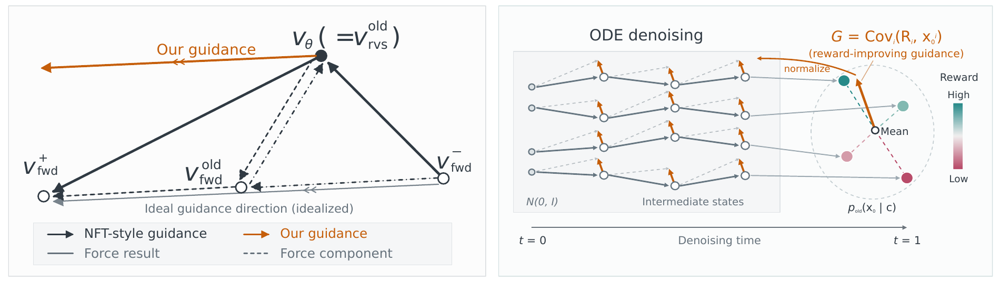

Efficient
11.3× and 7.1× fewer GPU hours to reach the respective T2V reward levels of DiffusionNFT and Flow-GRPO-Fast.
Efficient, Stable and Scalable
Reinforcement of Diffusion Model
DiffusionART changes the order of operations: aggregate reward guidance first, then update the model.
Scaling diffusion reinforcement calls for both useful reward guidance and stable updates. We identify a hidden forward–reverse consistency force in NFT-style training, and show that restoration toward the old policy is central to the stabilizing effect of off-policy updates.
DiffusionART removes that force through aggregation-first reward tilting and adds adaptive restoration through frozen-target replay. It learns from scalar or pairwise feedback, with experiments spanning text-to-image, text-to-video and image-to-video generation.
11.3× and 7.1× fewer GPU hours to reach the respective T2V reward levels of DiffusionNFT and Flow-GRPO-Fast.
Adaptive restoration emerges from a second update on a frozen target, anchoring learning as the policy moves.
One pair per prompt can suffice. K = 2 reaches the reported VQ threshold in 2.8× fewer GPU hours than K = 8.
NFT-style training aggregates sample-level gradients after each sample has already introduced its own consistency force. DiffusionART instead aggregates endpoints and rewards into a shared direction before any statewise regression.

Construct reward-improving guidance directly in endpoint space. This avoids relying on cancellation between sample-level positive and negative consistency forces.
Freeze the old-policy target and fit it on two disjoint minibatches. At the second update, the MSE objective also restores the policy in proportion to its output drift.
DiffusionART learns efficiently across visual generation tasks, including feedback given only as pairwise preferences.

HunyuanVideo-13B, with VQ:MQ = 1:1 for all three methods.
| Compared with | Steps | GPU hours |
|---|---|---|
| DiffusionNFT | 4.9× | 11.3× |
| Flow-GRPO-Fast | 13.0× | 7.1× |
The same eight-update causal EMA is used for threshold measurement. Elapsed GPU hours include evaluation, checkpointing and waiting.
Download curve data (.csv)Pairwise DiffusionART uses binary preferences, not reward magnitudes. K = 2 reaches VQ 12.5 in 2.8× fewer GPU hours than K = 8.

On distilled Wan2.1-I2V-14B, DiffusionART reaches MQ 6 with 5.6× fewer GPU hours than Flow-GRPO-Fast.

Pretrained and DiffusionART generations, side by side.
Selected evaluation examples. Video pairs share prompts, seeds and sampling settings. Media provenance
Training code, configurations and reproducibility instructions are being prepared for release.
github.com/vanzll/DiffusionART{kind=link}